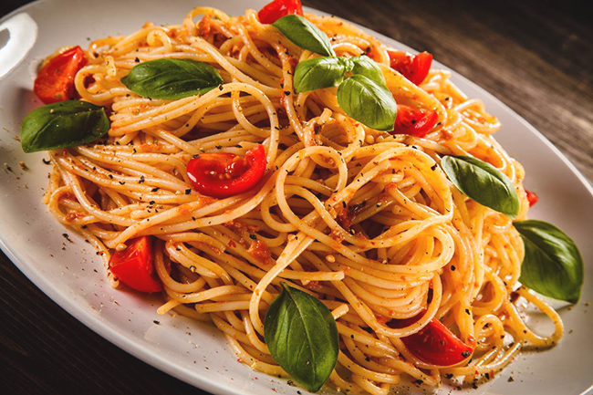
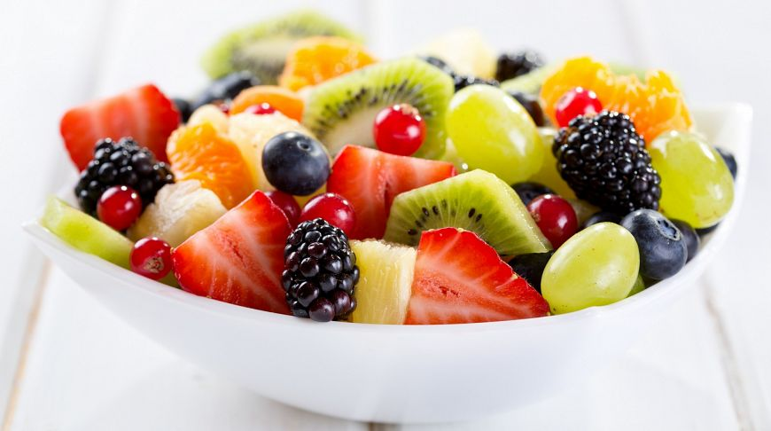
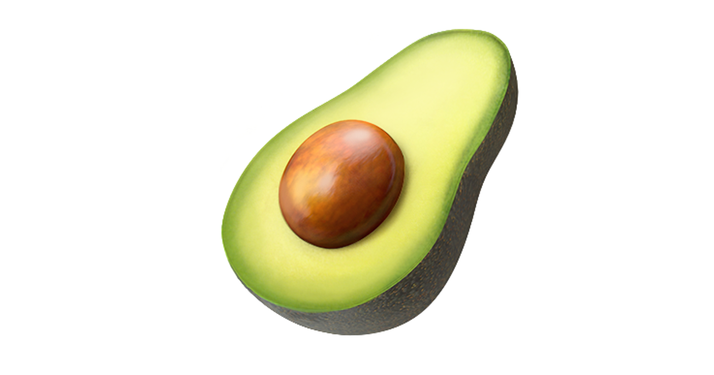

Популярные рецепты

Свежий салат
Легкий и полезный салат с овощами и домашней заправкой.

Итальянская паста
Ароматная паста с томатным соусом и свежими травами.

Фруктовый десерт
Нежный десерт из свежих фруктов и взбитых сливок.
О нашей философии питания
О философии питания: еда должна быть здоровой, полноценной, вкусной и безопасной. В первую очередь, она должна обеспечивать организм необходимой энергией, белками, жирами, углеводами, витаминами, минералами и водой для нормального функционирования и жизнедеятельности. Важно также, чтобы питание приносило удовольствие и способствовало укреплению здоровья, а не только утоляло голод.
Почему выбирают нас

Свежие продукты
Только сезонные и качественные ингридиенты.
Быстрое приготовление
Рецепты, которые готовятся за 30 минут.

Полезно для здоровья
Сбалансированное питание для всей семьи.